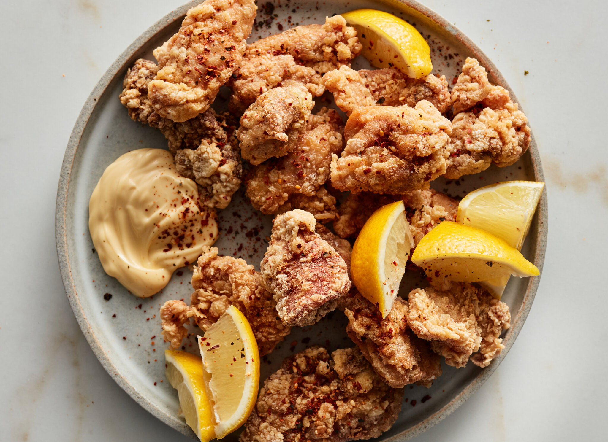

Karaage

Karaage
This is an introductory lesson on how to make Karaage.
Required Ingredients
- flour
- soy sauce
- cooking alcohol
- mayonaise
- ginger
- garlic
- chicken thighs (breasts are also acceptable)
- lemon
- olive oil
Steps
- First, lets marinate the meat. In a plactic bag, pour in a healthy amount of soy sauce and cooking alcohol in plastic bag
- Add minced ginger and garlic. Put the meat in the bag and leave it in the fridge for about 30 minutes
- After 30 minutes, put the flour in a bowl, and thoroughly cover the meat with the flour
- Heat up the olive oil, and fry the chicken until the batter turns to a golden brown color
- Take out the karaage and leave it on some kitchen paper to let excess oil out. cover with lemon juice and serve with mayonaisse
- Enjoy
Go back